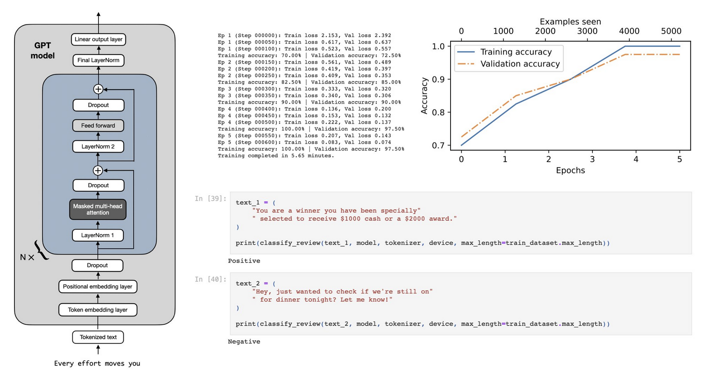
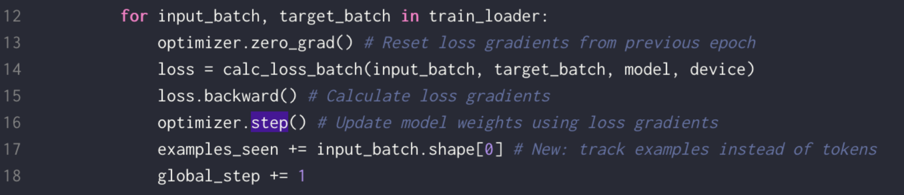

Introduction

In a recent episode of the Vanishing Gradients podcast, Sebastian Raschka, an AI researcher and educator, dove into the fascinating world of large language models (LLMs) and their applications. During the podcast, Sebastian shared valuable insights on the LLM lifecycle, fine-tuning techniques, and practical considerations for working with these powerful models.
One of the highlights of the episode was a live coding session, where Sebastian demonstrated how to fine-tune a small local GPT model for a specific task: spam classification. Fine-tuning pre-trained LLMs for specific tasks is a crucial skill in the field of natural language processing (NLP), as it allows us to adapt these models to solve real-world problems efficiently.
In this blog post, we’ll take a closer look at Sebastian’s live coding session and break down the steps involved in fine-tuning a local GPT model for spam classification. We’ll explore the following topics:
- Dataset and preprocessing techniques
- Loading pre-trained weights from OpenAI
- Model architecture modifications
- Training process and evaluation metrics
- Inference and results
- Potential improvements and further experiments
By the end of this post, you’ll have a solid understanding of how to fine-tune LLMs for your own projects and a practical example to guide you along the way.
You can watch it below and you can run all the code in Lightning Studio here!
Dataset and Preprocessing
To get started, Sebastian used a dataset consisting of text messages labeled as either “spam” or “ham” (non-spam). To keep the training fast (30 seconds on GPU, 10 minutes on laptop), he used a relatively small dataset and relatively small GPT-2 model.
To preprocess the data, Sebastian followed these steps:
- Loaded the dataset using pandas:
- Pandas is a popular library for data manipulation and analysis in Python
- It provides a convenient way to load datasets from various file formats, such as CSV or Excel
- If needed, polars can be used, which is another library that can be used for similar purposes, offering some performance advantages in certain scenarios
- Encoded the labels as integers (0 for “ham” and 1 for “spam”)
- Converting the text labels to integers is a common practice in machine learning
- It allows the model to work with numerical data, which is more efficient and easier to process
- In this case, “ham” messages are assigned the label 0, while “spam” messages are assigned the label 1
- Split the data into train, validation, and test sets
- Splitting the dataset into separate subsets is crucial for evaluating the model’s performance and preventing overfitting
- The training set is used to update the model’s parameters during the learning process
- The validation set is used to tune hyperparameters and monitor the model’s performance during training
- The test set is used to assess the model’s final performance on unseen data and provide an unbiased estimate of its generalization ability
Since the dataset was not balanced, Sebastian balanced it himself to ensure that the accuracy metric is meaningful (avoiding the need for F1 score, precision, and recall). Imbalanced datasets can lead to misleading accuracy scores, as a model that simply predicts the majority class can achieve high accuracy without actually learning to discriminate between the classes. By balancing the dataset, Sebastian ensured that the model’s performance is not biased towards the majority class and that the accuracy metric provides a fair assessment of its classification abilities. (In a real-world application, we may work with larger, imbalanced dataset; but a balanced dataset is used for simplicity here.)
After preprocessing the data, Sebastian created PyTorch datasets and data loaders to efficiently batch and shuffle the data during training. PyTorch datasets provide a convenient way to encapsulate the data and apply transformations, while data loaders handle batching, shuffling, and parallelization. He aimed for the following number of batches:
- Training batches: 130
- Validation batches: 19
- Test batches: 30
These data loaders were used to feed the data into the model during the training and evaluation phases, just like in scikit-learn when training classifiers like logistic regression, naive Bayes, or SVMs. This abstraction allows for a consistent and efficient way of handling data across different machine learning frameworks and libraries.
Loading Pre-trained Weights and Modifying the Architecture

Sebastian loaded a pre-trained GPT-2 model using weights from OpenAI into his own reimplementation of GPT. He started with the smallest GPT-2 model but kept in mind that larger models can be used as well. The different model sizes have the same architecture, with the same transformer blocks and attention heads, but differ in the number of blocks and heads. This allows for flexibility in choosing the model size based on the available computational resources and the complexity of the task at hand.
Before fine-tuning, Sebastian checked if the loaded model works by generating some text. This is an important step to ensure that the model has been loaded correctly and is functioning as expected. By generating text, he verified that the model is able to produce coherent and meaningful outputs based on the given prompt.
Next, Sebastian examined the model architecture, which consists of:
- Token embeddings
- Positional embeddings
- Optional dropout
- Repeated transformer blocks with multi-head attention
Understanding the architecture of the pre-trained model is crucial for making informed decisions about how to modify it for the specific task.
To adapt GPT-2 for the spam classification task, Sebastian modified the model’s architecture by replacing the final layer with a linear layer that serves as a binary classifier head. The original GPT-2 model is designed for language modeling and text generation, so its final layer outputs a probability distribution over the entire vocabulary. However, for the spam classification task, we only need a binary output indicating whether a message is spam or not. By replacing the final layer with a binary classifier head, Sebastian adapted the model to the specific requirements of the task.
He also froze all layers except the classifier head and the last transformer block. Freezing the layers means that their parameters will not be updated during the fine-tuning process. This is a common technique used to prevent overfitting and reduce the computational cost of fine-tuning. By freezing the pre-trained layers, Sebastian leveraged the language understanding capabilities already learned by the model and focused on adapting the final layers to the specific task. The last transformer block was left unfrozen to allow for some task-specific adjustments to the model’s representations.
Training and Evaluation
With the modified GPT-2 architecture in place, Sebastian set up the training loop using PyTorch. He defined the optimizer and loss function (cross-entropy loss) and iterated over the training data loader, performing forward and backward passes and updating the model parameters.
The optimizer is responsible for updating the model’s parameters based on the computed gradients. In this case, Sebastian used the Adam optimizer, which is a popular choice for training deep learning models. The cross-entropy loss function measures the discrepancy between the predicted probabilities and the true labels, providing a signal for the model to learn from.
During each training iteration, Sebastian:
- Performed a forward pass to compute the model’s predictions
- Calculated the loss
- Performed a backward pass to compute the gradients
- Updated the model’s parameters using the optimizer

Sebastian defined an evaluation function to compute the loss and accuracy over the validation set. Evaluating the model on the validation set during training allows for monitoring the model’s performance on unseen data and helps in detecting overfitting. If the validation loss starts increasing while the training loss continues to decrease, it’s an indication that the model is starting to overfit to the training data.
Before training the model, Sebastian evaluated the baseline performance of the model, which achieved around 50% accuracy before fine-tuning as expected, which is equivalent to random guessing in a binary classification task.
Next, Sebastian ran the training for 5 epochs and monitored the progress. An epoch represents a complete pass through the entire training datasetDuring the live coding session, Sebastian encountered a gotcha: forgetting to use the no_grad context or inference mode. In PyTorch, when you perform operations on tensors, it builds a computation graph that keeps track of the gradients. This is necessary for training the model, but during evaluation or inference, we don’t need to compute gradients. Forgetting to use no_grad or inference mode can lead to unnecessary memory usage and slower performance. Sebastian fixed this issue and continued training.
Inference and Results
After the first round of training, Sebastian evaluated the fine-tuned model on the test set. He initially achieved an accuracy of around 80%, which is a significant improvement over the random baseline of 50%. Then, after fixing another gotcha and rerunning the notebook,the model achieved an accuracy of 95% on the test set. This high accuracy indicates that the fine-tuned GPT-2 model has successfully learned to distinguish between spam and ham messages with a high degree of accuracy.
To further demonstrate the effectiveness of fine-tuning, Sebastian compared the fine-tuned model’s performance to the pre-trained GPT-2 model. The pre-trained model, without any fine-tuning, is not specifically adapted to the spam classification task and may not perform as well. By comparing the results, he highlighted the importance of fine-tuning for achieving high performance on specific tasks.
Sebastian also experimented with a larger GPT-2 model and observed that it generates less repetitive text and performs even better. This suggests that using larger models with more capacity can lead to improved performance, especially for more complex tasks.
The iterative process of fine-tuning, evaluating, and making adjustments is a common practice in machine learning. By analyzing the model’s performance and identifying areas for improvement, practitioners can gradually refine the model and achieve better results. The jump from 50% accuracy to 95% accuracy in Sebastian’s live coding session demonstrates the power of this iterative approach and the potential for significant performance gains through fine-tuning.
Potential Improvements and Further Experiments
To further optimize the model’s performance and generalize the fine-tuning approach to other tasks and datasets, Sebastian explored the following potential improvements and experiments:
- Trying different learning rates and optimizers
- The choice of learning rate and optimizer can have a significant impact on the model’s convergence speed and final performance. Experimenting with different learning rates (e.g., higher or lower values) and alternative optimizers (e.g., SGD, RMSprop) can help find the optimal configuration for the specific task.
- Adjusting the number of frozen layers
- While freezing the majority of the layers helps prevent overfitting and reduces computational cost, it may also limit the model’s ability to adapt to the specific task. Experimenting with unfreezing more layers or using a gradual unfreezing scheme can allow for more fine-grained adaptation while still benefiting from the pre-trained weights.
- Experimenting with other pre-trained LLMs (e.g., BERT, RoBERTa)
- GPT-2 is just one of many powerful pre-trained language models available. Trying out other models, such as BERT (Bidirectional Encoder Representations from Transformers) or RoBERTa (Robustly Optimized BERT Pretraining Approach), can provide different insights and potentially lead to better performance on certain tasks.
- Fine-tuning the model on larger datasets
- The size and quality of the dataset play a crucial role in the model’s performance. When available, fine-tuning the model on larger datasets can help the model learn more robust and generalizable representations. However, it’s important to ensure that the larger dataset is still relevant to the task at hand and properly labeled.
- Applying the fine-tuning approach to other text classification tasks
- The fine-tuning approach demonstrated in this live coding session can be applied to a wide range of text classification tasks, such as sentiment analysis, topic classification, or intent recognition. Experimenting with different datasets and tasks can validate the effectiveness of the approach and expand its applicability.
By exploring these variations and iteratively improving the fine-tuning process, practitioners can unlock the full potential of pre-trained language models and develop highly accurate and efficient solutions for a wide range of NLP problems.
Conclusion
Sebastian’s live coding session provides a hands-on demonstration of fine-tuning GPT-2 for spam classification. The key takeaways from this session include:
- Fine-tuning pre-trained LLMs is a powerful and cost-effective technique for adapting them to specific tasks.
- The process involves modifying the model architecture, freezing layers, and training on task-specific data.
- Evaluation is crucial for monitoring the model’s performance and making improvements.
- Fine-tuned LLMs can achieve high accuracy on specific tasks, such as spam classification.
- Experimenting with different model sizes and architectures can lead to better performance.
- Iterative fine-tuning, evaluation, and adjustments can result in significant performance gains, as demonstrated by the improvement from 50% to 95% accuracy in Sebastian’s session.
By following the steps outlined in this blog post and experimenting with different techniques, practitioners can apply the power of fine-tuned LLMs to their own projects and unlock new possibilities in natural language processing.
If you enjoyed this, you can follow Sebastian on twitter here and Hugo here. You can also subscribe to Hugo’s fortnightly Vanishing Gradients Newsletter here.